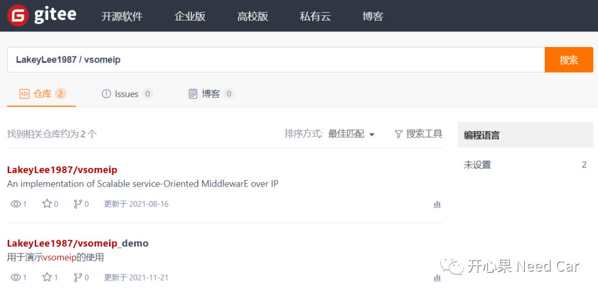

开心果 Need Car · 2022-01-08T11:19:00+08:00 · 微信原文
最近在搞SOME/IP，在没有商用软硬件的条件下，只能自力更生，在VBox中玩开源的VSOME/IP。在玩VSOME/IP过程中，配置环境踩了一堆的坑，本文分享一下自己遇到的那些坑以及解决方法。
资源说明
语言：C++

换源
//更新源sudo apt-get update//更新软件sudo apt-get upgrade
libboost安装
使用开源的VSOME/IP需要安装libboost，安装过程中，我按照README安装踩了坑。
sudo apt-get install libboost-system1.55-dev libboost-thread1.55-dev libboost-log1.55-dev使用说明的方法行不通，安装要求Boost >= 1.55，那索性直接安装最新的版本。
参考：https://blog.csdn.net/qq_41854911/article/details/119454212
Error：Configuration module could not be loaded!
forlinx@forlinx:~/Documents/vsomeip_master/build/examples$ env VSOMEIP_CONFIGURATION=../../config/vsomeip-udp-service.json VSOMEIP_APPLICATION_NAME=service-sample ./response-sampleConfiguration module could not be loaded!
//查找libvsomeip3库位置sudo find / -iname "*libvsomeip3*"
运行结果：
forlinx@forlinx:~$ sudo find / -iname "*vsomeip3*"/home/forlinx/Documents/vsomeip_master/vsomeip3.pc.in/home/forlinx/Documents/vsomeip_master/vsomeip3Config.cmake.in/home/forlinx/Documents/vsomeip_master/vsomeip3ConfigVersion.cmake.in/home/forlinx/Documents/vsomeip_master/build/CMakeFiles/vsomeip3.dir/home/forlinx/Documents/vsomeip_master/build/CMakeFiles/vsomeip3-cfg.dir/home/forlinx/Documents/vsomeip_master/build/CMakeFiles/vsomeip3-e2e.dir/home/forlinx/Documents/vsomeip_master/build/CMakeFiles/vsomeip3-sd.dir/home/forlinx/Documents/vsomeip_master/build/CMakeFiles/Export/lib/cmake/vsomeip3/home/forlinx/Documents/vsomeip_master/build/CMakeFiles/Export/lib/cmake/vsomeip3/vsomeip3Targets.cmake/home/forlinx/Documents/vsomeip_master/build/CMakeFiles/Export/lib/cmake/vsomeip3/vsomeip3Targets-relwithdebinfo.cmake/home/forlinx/Documents/vsomeip_master/build/vsomeip3Config.cmake/home/forlinx/Documents/vsomeip_master/build/vsomeip3.pc/home/forlinx/Documents/vsomeip_master/build/vsomeip3ConfigVersion.cmake/home/forlinx/Documents/vsomeip_master/build/vsomeip3Targets.cmake/home/forlinx/Documents/vsomeip_master/build/libvsomeip3.so.3.1.20/home/forlinx/Documents/vsomeip_master/build/libvsomeip3.so.3/home/forlinx/Documents/vsomeip_master/build/libvsomeip3.so/home/forlinx/Documents/vsomeip_master/build/libvsomeip3-cfg.so.3.1.20/home/forlinx/Documents/vsomeip_master/build/libvsomeip3-cfg.so.3/home/forlinx/Documents/vsomeip_master/build/libvsomeip3-cfg.so/home/forlinx/Documents/vsomeip_master/build/libvsomeip3-e2e.so.3.1.20/home/forlinx/Documents/vsomeip_master/build/libvsomeip3-e2e.so.3/home/forlinx/Documents/vsomeip_master/build/libvsomeip3-e2e.so/home/forlinx/Documents/vsomeip_master/build/libvsomeip3-sd.so.3.1.20/home/forlinx/Documents/vsomeip_master/build/libvsomeip3-sd.so.3/home/forlinx/Documents/vsomeip_master/build/libvsomeip3-sd.so
https://blog.csdn.net/cainiao2013/article/details/88926106?utm_medium=distribute.pc_relevant.none-task-blog-2~default~baidujs_baidulandingword~default-1.no_search_link&spm=1001.2101.3001.4242.2&utm_relevant_index=4
include /etc/ld.so.conf.d/*.conf/home/forlinx/Documents/vsomeip_master/build
最后运行ldconfig，更新一下搜索路径：
sudo ldconfig往期精彩回顾